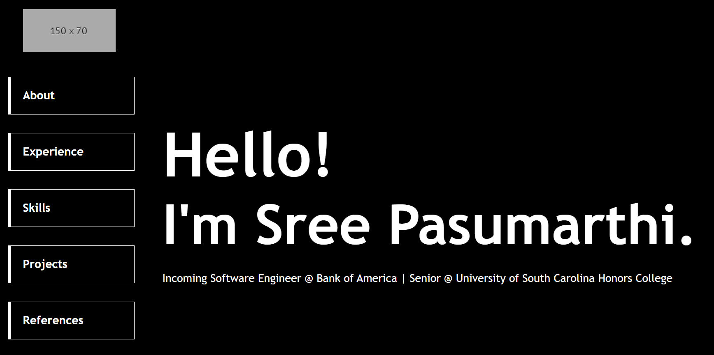
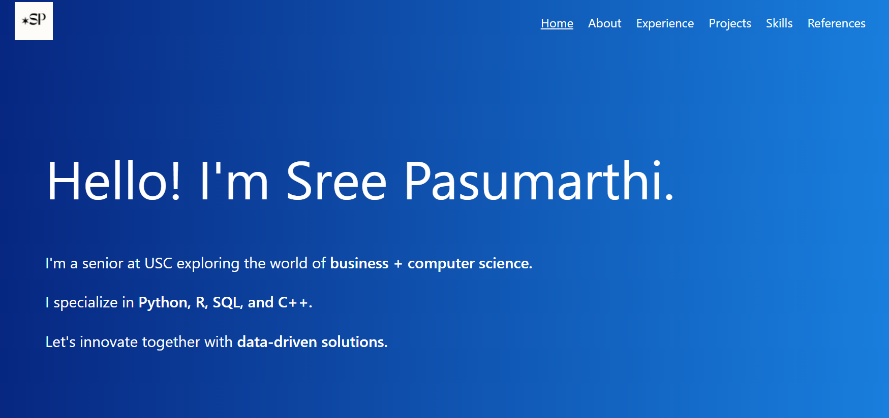

Sree Pasumarthi
CSCE 242: Client-Server Computing
Project
Part 1 - Topic Selection
Part 2 - Wireframe
Part 3 - HTML & CSS

Part 4 - Colors, Pictures, and Text

Part 4.5 - Improve Your Website
Part 5 - JSON File Parsing